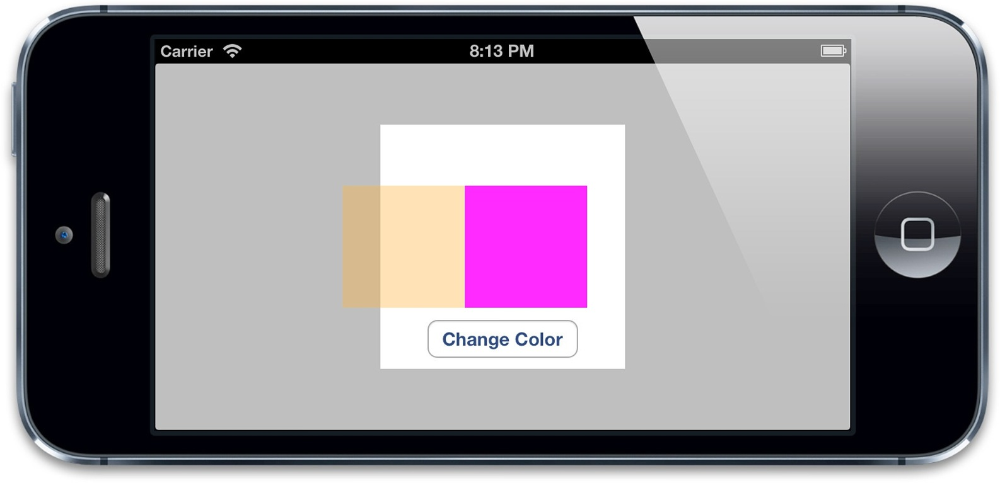

现在来做个实验，试着直接对UIView关联的图层做动画而不是一个单独的图层。清单7.4是对清单7.2代码的一点修改，移除了colorLayer，并且直接设置layerView关联图层的背景色。
清单7.4 直接设置图层的属性
@interface ViewController ()
@property (nonatomic, weak) IBOutlet UIView *layerView;
@end
@implementation ViewController
- (void)viewDidLoad
{
[super viewDidLoad];
//set the color of our layerView backing layer directly
self.layerView.layer.backgroundColor = [UIColor blueColor].CGColor;
}
- (IBAction)changeColor
{
//begin a new transaction
[CATransaction begin];
//set the animation duration to 1 second
[CATransaction setAnimationDuration:1.0];
//randomize the layer background color
CGFloat red = arc4random() / (CGFloat)INT_MAX;
CGFloat green = arc4random() / (CGFloat)INT_MAX;
CGFloat blue = arc4random() / (CGFloat)INT_MAX;
self.layerView.layer.backgroundColor = [UIColor colorWithRed:red green:green blue:blue alpha:1.0].CGColor;
//commit the transaction
[CATransaction commit];
}
运行程序，你会发现当按下按钮，图层颜色瞬间切换到新的值，而不是之前平滑过渡的动画。发生了什么呢？隐式动画好像被UIView关联图层给禁用了。
试想一下，如果UIView的属性都有动画特性的话，那么无论在什么时候修改它，我们都应该能注意到的。所以，如果说UIKit建立在Core Animation（默认对所有东西都做动画）之上，那么隐式动画是如何被UIKit禁用掉呢？
我们知道Core Animation通常对CALayer的所有属性（可动画的属性）做动画，但是UIView把它关联的图层的这个特性关闭了。为了更好说明这一点，我们需要知道隐式动画是如何实现的。
我们把改变属性时CALayer自动应用的动画称作行为，当CALayer的属性被修改时候，它会调用-actionForKey:方法，传递属性的名称。剩下的操作都在CALayer的头文件中有详细的说明，实质上是如下几步：
CALayerDelegate协议指定的-actionForLayer:forKey方法。如果有，直接调用并返回结果。-actionForLayer:forKey方法，图层接着检查包含属性名称对应行为映射的actions字典。actions字典没有包含对应的属性，那么图层接着在它的style字典接着搜索属性名。style里面也找不到对应的行为，那么图层将会直接调用定义了每个属性的标准行为的-defaultActionForKey:方法。所以一轮完整的搜索结束之后，-actionForKey:要么返回空（这种情况下将不会有动画发生），要么是CAAction协议对应的对象，最后CALayer拿这个结果去对先前和当前的值做动画。
于是这就解释了UIKit是如何禁用隐式动画的：每个UIView对它关联的图层都扮演了一个委托，并且提供了-actionForLayer:forKey的实现方法。当不在一个动画块的实现中，UIView对所有图层行为返回nil，但是在动画block范围之内，它就返回了一个非空值。我们可以用一个demo做个简单的实验（清单7.5）
清单7.5 测试UIView的actionForLayer:forKey:实现
@interface ViewController ()
@property (nonatomic, weak) IBOutlet UIView *layerView;
@end
@implementation ViewController
- (void)viewDidLoad
{
[super viewDidLoad];
//test layer action when outside of animation block
NSLog(@"Outside: %@", [self.layerView actionForLayer:self.layerView.layer forKey:@"backgroundColor"]);
//begin animation block
[UIView beginAnimations:nil context:nil];
//test layer action when inside of animation block
NSLog(@"Inside: %@", [self.layerView actionForLayer:self.layerView.layer forKey:@"backgroundColor"]);
//end animation block
[UIView commitAnimations];
}
@end
运行程序，控制台显示结果如下：
$ LayerTest[21215:c07] Outside: <null>
$ LayerTest[21215:c07] Inside: <CABasicAnimation: 0x757f090>
于是我们可以预言，当属性在动画块之外发生改变，UIView直接通过返回nil来禁用隐式动画。但如果在动画块范围之内，根据动画具体类型返回相应的属性，在这个例子就是CABasicAnimation（第八章“显式动画”将会提到）。
当然返回nil并不是禁用隐式动画唯一的办法，CATransacition有个方法叫做+setDisableActions:，可以用来对所有属性打开或者关闭隐式动画。如果在清单7.2的[CATransaction begin]之后添加下面的代码，同样也会阻止动画的发生：
[CATransaction setDisableActions:YES];
总结一下，我们知道了如下几点
UIView关联的图层禁用了隐式动画，对这种图层做动画的唯一办法就是使用UIView的动画函数（而不是依赖CATransaction），或者继承UIView，并覆盖-actionForLayer:forKey:方法，或者直接创建一个显式动画（具体细节见第八章）。-actionForLayer:forKey:委托方法，或者提供一个actions字典来控制隐式动画。我们来对颜色渐变的例子使用一个不同的行为，通过给colorLayer设置一个自定义的actions字典。我们也可以使用委托来实现，但是actions字典可以写更少的代码。那么到底改如何创建一个合适的行为对象呢？
行为通常是一个被Core Animation隐式调用的显式动画对象。这里我们使用的是一个实现了CATransaction的实例，叫做推进过渡。
第八章中将会详细解释过渡，不过对于现在，知道CATransition响应CAAction协议，并且可以当做一个图层行为就足够了。结果很赞，不论在什么时候改变背景颜色，新的色块都是从左侧滑入，而不是默认的渐变效果。
清单7.6 实现自定义行为
@interface ViewController ()
@property (nonatomic, weak) IBOutlet UIView *layerView;
@property (nonatomic, weak) IBOutlet CALayer *colorLayer;/*热心人发现这里应该改为@property (nonatomic, strong) CALayer *colorLayer;否则运行结果不正确。
*/
@end
@implementation ViewController
- (void)viewDidLoad
{
[super viewDidLoad];
//create sublayer
self.colorLayer = [CALayer layer];
self.colorLayer.frame = CGRectMake(50.0f, 50.0f, 100.0f, 100.0f);
self.colorLayer.backgroundColor = [UIColor blueColor].CGColor;
//add a custom action
CATransition *transition = [CATransition animation];
transition.type = kCATransitionPush;
transition.subtype = kCATransitionFromLeft;
self.colorLayer.actions = @{@"backgroundColor": transition};
//add it to our view
[self.layerView.layer addSublayer:self.colorLayer];
}
- (IBAction)changeColor
{
//randomize the layer background color
CGFloat red = arc4random() / (CGFloat)INT_MAX;
CGFloat green = arc4random() / (CGFloat)INT_MAX;
CGFloat blue = arc4random() / (CGFloat)INT_MAX;
self.colorLayer.backgroundColor = [UIColor colorWithRed:red green:green blue:blue alpha:1.0].CGColor;
}
@end

图7.3 使用推进过渡的色值动画